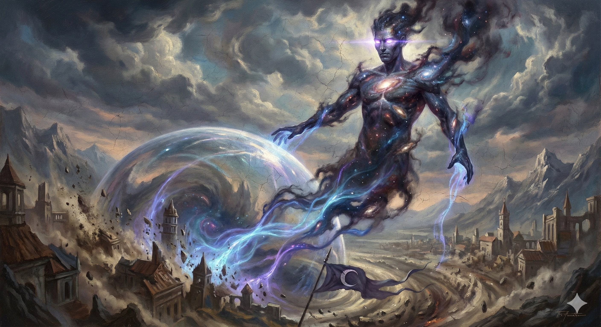

Paladins of the Maw are the chilling arbiters of a cosmic, predatory truth. They understand that the universe is a ceaseless process of consumption and re-evaluation, and that Xy'lorgmath, the Hungry Moon, is the ultimate engine of that process. They hunt the stagnant, expose the fraudulent, and shatter the comfortable illusions that allow weakness to fester.
Spell Save DC = 8 + your proficiency bonus + your Charisma modifier
| Paladin Level | Spells |
|---|---|
| 3rd | Dissonant Whispers, Armor of Agathys |
| 5th | Blindness/Deafness, See Invisibility |
| 9th | Bestow Curse, Hunger of Hadar |
| 13th | Evard's Black Tentacles, Phantasmal Killer |
| 17th | Contagion, Telekinesis |
As a bonus action, you can channel the Maw's all-consuming gaze at one creature you can see within 60 feet. The target must make a Wisdom saving throw. On a failed save, the creature is frightened of you for 1 minute. While frightened, the creature's speed is reduced to 0. The creature can repeat the saving throw at the end of each of its turns.
As an action, you project a terrifying psychic lure. Each hostile creature of your choice within 30 feet of you must make a Wisdom saving throw. On a failed save, a creature is charmed by you for 1 minute or until it takes damage. While charmed, the creature must move as close to you as it can by the most direct route available.
Starting at 7th level, you emanate a constant aura of gravitational pressure to a range of 10 feet. The area within the aura is considered difficult terrain for hostile creatures. Additionally, if a hostile creature starts its turn in the aura, its speed is reduced by 10 feet until the start of its next turn. At 18th level, the range increases to 30 feet.
Starting at 15th level, when a creature within your Aura of the Void makes an attack against you or a friendly creature, you can use your reaction to make one melee weapon attack against the attacker. If the attack hits, the target takes an extra 1d8 psychic damage.
At 20th level, you can use your action to become a terrifying avatar of your god for 1 minute: